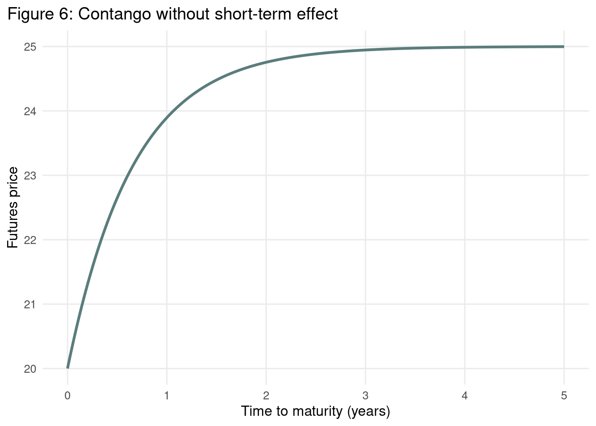
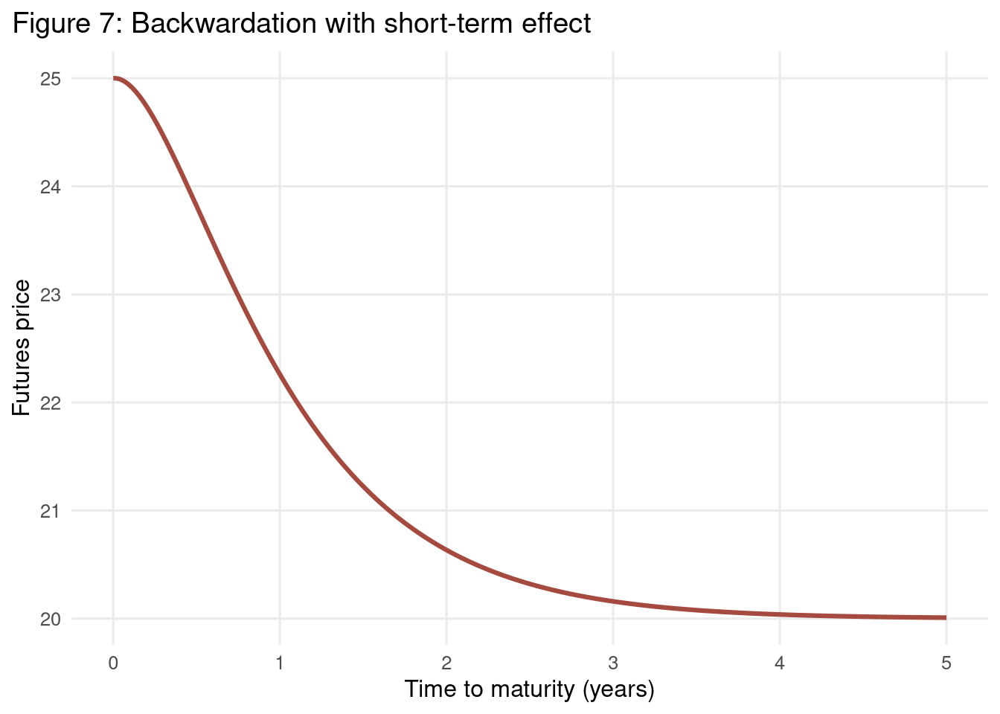
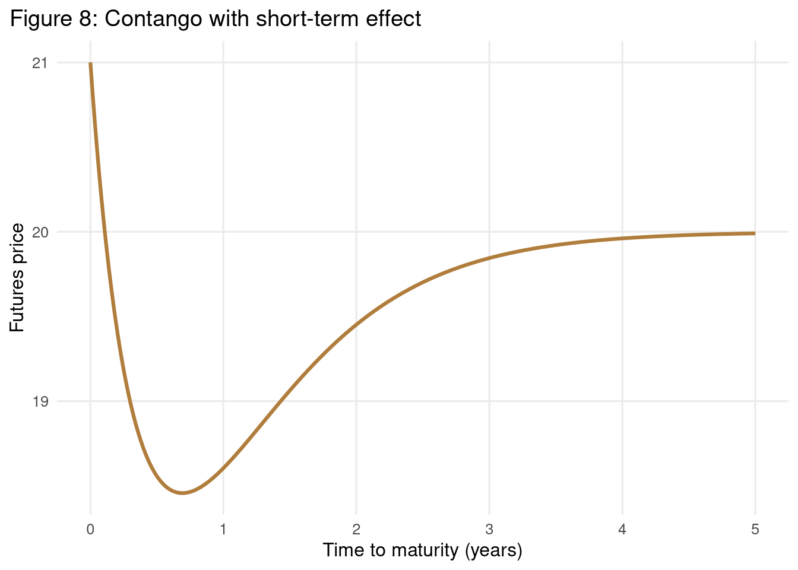
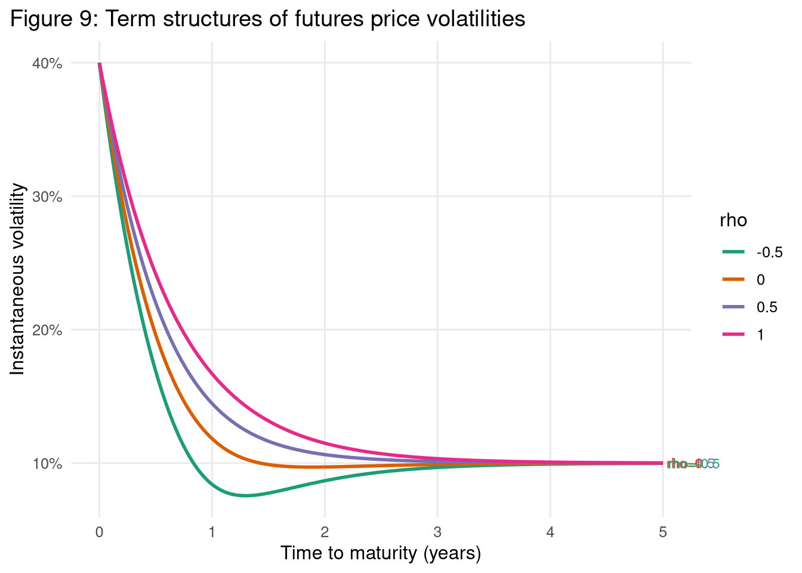

```{r setup}
library(tidyverse)
library(scales)
candidate_paths <- c(
params$report_data_path,
file.path("output", "model_only_report_inputs.rds")
)
resolved_path <- candidate_paths[file.exists(candidate_paths)][1]
if (is.na(resolved_path)) {
stop("Could not locate model_only_report_inputs.rds for report rendering.")
}
report_inputs <- readRDS(resolved_path)
fig5_df <- report_inputs$fig5_df
fig6_df <- report_inputs$fig6_df
fig7_df <- report_inputs$fig7_df
fig8_df <- report_inputs$fig8_df
fig9_df <- report_inputs$fig9_df
cfg <- report_inputs$cfg
base_theme <- theme_minimal(base_size = 12) +
theme(
panel.grid.minor = element_blank(),
plot.title.position = "plot"
)
```Reproducing Gabillon (1991): Model-Implied Term Structures
Model-only reproduction of Figures 5-9
Research
R
Commodities
Tutorials
Rahul ![]()
Motivation
The paper by Gabillon (1991) (Gabillon 1991) presents a structural model of commodity futures prices that generates a rich variety of term-structure shapes and dynamics. A practical application of this model is critical for a Risk desk, much like the implementation I developed for the Trafigura Oil Trading desk while working under the Chief Risk Officer. Risk management teams require these models to accurately value complex volatile commodity derivatives, stress-test portfolios against term-structure deformations (like backwardation and contango shifts), and calculate reliable Value-at-Risk (VaR) metrics by capturing the distinct behaviors of short- and long-term price dynamics.
Because I am intimately familiar with the model and the code required to reproduce it, I designed this project as a practical exercise in AI-assisted coding. My focus was on building the implementation plan and guiding the agent if it deviated from the set path. With minimal assistance, GitHub Copilot successfully reproduced the complex model figures purely from the analytical equations and parameter values reported in the paper.
It took me roughly 2-3 hours to plan the architecture and guide Copilot to produce the complete pipeline and report. Without an AI assistant, writing the boilerplate, pipeline orchestration, and analytical code manually would likely have taken 10-12 hours. This serves as a strong example of how AI can save substantial time and effort, acting as a powerful force multiplier that makes domain experts significantly more efficient in their work.
Study Objective and Reconstruction Scope
In this note, I reproduce the model-implied term-structure figures that can be generated directly from the analytical system and the fixed parameter values reported by Gabillon (1991) (Gabillon 1991). The scope is intentionally restricted to Figures 5-9, because these panels are determined by structural equations and parameterized scenarios rather than by historical market reconstruction.
Gabillon, Jacques. 1991. “The Term Structure of Oil Futures Prices.” Oxford Institute for Energy Studies Working Paper.
Taken together, the figures provide a compact visual summary of the model’s main economic behaviors: Figures 5 and 6 isolate the baseline contango and backwardation regimes, Figures 7 and 8 show how short-term effects deform the front end of the curve, and Figure 9 shifts attention to the maturity profile of volatility. In practice, such figure-based intuition is useful in commodity derivatives work, including calendar-spread option analysis.
The reconstruction therefore emphasizes comparative statics and the geometric properties of the futures curves rather than empirical fit to dated contracts. That boundary is deliberate for a personal technical blog: the objective is to preserve an academic style of exposition while keeping the exercise fully reproducible from deterministic inputs stored in the project configuration files.
Model Specification Summary
Let \(\tau = T - t\) denote time to maturity. The constant-parameter representation (Equation 26) is implemented as:
\[ F_{26}(t, T) = A(\tau) S^{B(\tau)} L^{1 - B(\tau)}, \]
with
\[ B(\tau) = e^{-\beta \tau}, \quad A(\tau) = \exp\left(\frac{v}{4\beta}\left(e^{-\beta \tau} - e^{-2\beta \tau}\right)\right). \]
The short-term effect specification (Equation 28) is implemented as:
\[ F_{28}(t, T) = \exp\left(\frac{v}{4\beta}\left(e^{-\beta \tau} - e^{-2\beta \tau}\right) - \frac{\theta}{\beta - q} e^{-qT}\left(1 - e^{-(\beta - q)\tau}\right)\right) S^{B(\tau)} L^{1 - B(\tau)}. \]
For volatility term structures (Equation 23-consistent form), the instantaneous futures volatility is
\[ \sigma_F(\tau) = \sqrt{(\sigma_s B(\tau))^2 + (\sigma_l(1-B(\tau)))^2 + 2\rho\sigma_s\sigma_l B(\tau)(1-B(\tau)) }. \]
Parameter roles: \(S\) and \(L\) govern short- and long-run price anchors, \(\beta\) controls mean-reversion speed, \(v\) scales convexity, while \((\theta, q)\) govern local short-term deformation in Equation 28.
Figure-by-Figure Interpretation
Figure 5 and Figure 6: No Short-Term Effect
```{r figure-5}
ggplot(fig5_df, aes(x = tau_years, y = futures_price)) +
geom_line(linewidth = 1.1, color = "#1B4965") +
labs(
title = "Figure 5: Backwardation without short-term effect",
x = "Time to maturity (years)",
y = "Futures price"
) +
base_theme
```
```{r figure-6}
ggplot(fig6_df, aes(x = tau_years, y = futures_price)) +
geom_line(linewidth = 1.1, color = "#5A7D7C") +
labs(
title = "Figure 6: Contango without short-term effect",
x = "Time to maturity (years)",
y = "Futures price"
) +
base_theme
```
Under Equation 26, the sign of \((S-L)\) determines the global slope family. When \(S > L\) (Figure 5), the curve declines toward the long-run anchor, producing classical backwardation. When \(S < L\) (Figure 6), the curve increases toward \(L\), yielding contango. In both cases, convexity reflects finite \(v\) and exponential loading through \(\beta\).
Figure 7 and Figure 8: Non-Zero \(\theta\) and \(q\)
```{r figure-7}
ggplot(fig7_df, aes(x = tau_years, y = futures_price)) +
geom_line(linewidth = 1.1, color = "#A44A3F") +
labs(
title = "Figure 7: Backwardation with short-term effect",
x = "Time to maturity (years)",
y = "Futures price"
) +
base_theme
```
```{r figure-8}
ggplot(fig8_df, aes(x = tau_years, y = futures_price)) +
geom_line(linewidth = 1.1, color = "#B07D3C") +
labs(
title = "Figure 8: Contango with short-term effect",
x = "Time to maturity (years)",
y = "Futures price"
) +
base_theme
```
Allowing non-zero \((\theta, q)\) introduces localized near-maturity deformation relative to the baseline Equation 26 shape. Figure 7 shows this perturbation within a backwardated regime, while Figure 8 shows the corresponding effect under contango-type parameters. The primary qualitative effect is curvature adjustment close to the short end, while long-end anchoring remains governed by \(L\) and \(\beta\).
Figure 9: Volatility Term Structures by Correlation \(\rho\)
```{r figure-9}
fig9_labels <-
fig9_df |>
group_by(rho) |>
filter(tau_years == max(tau_years)) |>
ungroup()
ggplot(fig9_df, aes(x = tau_years, y = futures_volatility, color = factor(rho))) +
geom_line(linewidth = 1.0) +
geom_text(
data = fig9_labels,
aes(label = paste0("rho=", rho)),
hjust = -0.1,
size = 3,
show.legend = FALSE
) +
scale_color_brewer(palette = "Dark2") +
scale_y_continuous(labels = percent_format(accuracy = 1)) +
labs(
title = "Figure 9: Term structures of futures price volatilities",
x = "Time to maturity (years)",
y = "Instantaneous volatility",
color = "rho"
) +
coord_cartesian(clip = "off") +
theme(
plot.margin = margin(5.5, 60, 5.5, 5.5),
legend.position = "none"
) +
base_theme
```
The volatility panel isolates correlation sensitivity in the two-factor loading system. For interior maturities, higher \(\rho\) increases the covariance contribution and thus shifts volatility upward, whereas lower \(\rho\) dampens that contribution. This reproduces the expected ordering across the configured \(\rho\) grid.
In this implementation, \(\rho \in \{1.0, 0.5, 0.0, -0.5\}\) and all other volatility parameters are fixed, making Figure 9 a clean one-parameter comparative static.
Methodological Limitations and Reproducibility Boundaries
This model-only track does not attempt historical calibration, contract roll construction, or reconstruction of the paper’s full empirical environment. Consequently, the report supports qualitative validation of curve families and equation-consistent comparative statics, but not quantitative claims about realized market pricing errors or period-specific dynamics.
The boundary checks embedded in the pipeline enforce structural consistency, including \(F(0)=S\), long-horizon convergence to \(L\), monotonicity in baseline contango/backwardation scenarios, and deterministic section completeness for this report. These gates improve reproducibility and protect against silent drift in the analytical implementation.
Conclusion on Parsimonious Parameterization
The results show that a compact parameter set is sufficient to reproduce key geometric families of term structures discussed in Gabillon (1991). Without data calibration, the model already captures the principal directional and curvature regimes: baseline contango/backwardation patterns, short-end deformation from non-zero short-term effects, and volatility-shape sensitivity to correlation. This confirms the explanatory value of parsimonious structural parameterization for qualitative futures-curve analysis.